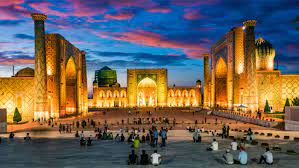
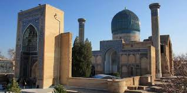
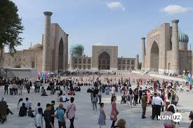
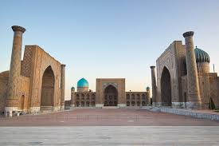
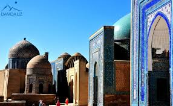
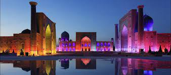
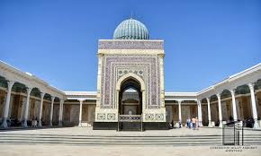
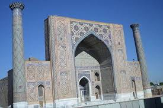
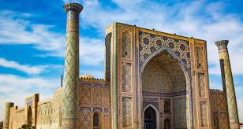

Samarqand |
|||||
| Samarqand |
Samarqand
|
||||
| Toshkent | |||||
| Buxoro | |||||
| O'zbekiston | |||||
| Farg'ona | |||||
| Jizzax | |||||
| Xorazm | |||||
| Namangan | |||||
| Qashqardaryo | |||||
| Sirdaryo | |||||
| Surxandaryo | |||||
| Andijon | |||||
Samarqand Vikipediya, ochiq ensiklopediya Navigatsiya qismiga oʻtishQidirish qismiga oʻtish Bu atamaning boshqa maʼnolari ham mavjud. Qarang: Samarqand (maʼnolari). Samarqand shahar RegistanSquare Samarkand.jpg Mosque Bibi Khanum (5).JPG Gur-e Amir - Exterior views 998.JPG Samarkand registan 04.png Mausolées du groupe central (Shah-i-Zinda, Samarcande) (6009956484).jpg Samarkand Shah-i Zinda general view.JPG {{{rasmiy_nomi}}}ning rasmiy gerbi Gerb 39°39′15″N 66°57′35″E G OKoordinatalari: 39°39′15″N 66°57′35″E G O Mamlakat Oʻzbekiston Viloyat Samarqand Viloyati Hukumat Avvalgi nomlari Maroqand (Marakanda) Maydon 120 km2 (46 mi²) Iqlim turi subtropik-ichkikontinental Rasmiy til(lar)i oʻzbekcha Aholisi (2019-yil 1-yanvar) ↗ 540 400 Zichligi 4415 kishi/km2 Milliy tarkib oʻzbeklar, tojiklar, ruslar, forslar, armanlar, tatarlar va boshqalar Konfessiyaviy tarkib asosan musulmonlar, shuningdek xristianlar va boshqalar Vaqt mintaqasi UTC+5 Telefon kodi 66 Pochta indeks(lar)i Amir Temur ordeni1401XX Avtomobil kodi 14 (1998—2008), 30-39 (2008) Samarqand xaritadaSamarqandSamarqand Samarqand — Oʻzbekiston Respublikasi Samarqand viloyatidagi qadimiy shahar. Viloyatning maʼmuriy, iqtisodiy va madaniy markazi (1938-yildan). 1925—30 yillarda Respublika poytaxti. Oʻzbekistonning janubi-gʻarbida, Zarafshon vodiysining markaziy qismida (Dargʻom va Siyob kanallari orasida) joylashgan. Oʻrtacha 695 m balandlikda. Toshkentdan 300 km. Samarqanddan Toshkent—Dushanbe, Toshkent—Turkmanboshi, Toshkent—Uchquduq—Qo'ngʻirot temir yoʻllari, Katta Oʻzbek trakti (Toshkent—Termiz yo'li) oʻtadi. Shahar aholisi va xoʻjaliklari Shovdor, Bogʻishamol ariqlaridan suv oladi. Iyulning oʻrtacha harorati 25,9°, eng baland harorat 40—42°, yanvar oʻrtacha harorati 0,2°, eng past harorat —26°. Maydoni 120 km². Aholisi 519600 ming kishi (2016); 1975-yil 299000, 1970-yil 267000, 1959-yil 196000, 1939-yil 136000, 1897-yil 55000, 1865-yil 26000. Samarqand shahar Kengashiga qarashli 4 shaharcha (Ingichka, Kimyogarlar, Farhod, Hishrov) mavjud. Mundarija 1 Tarixi 1.1 Nomlanish tarixi 1.2 Qadimgi davr va Ilk oʻrta asrlar 2 Turk xoqonligi va Gʻarbiy turk xoqonligi tarkibida 3 Arab xalifaligi tarkibida 4 Somoniylar va Qoraxoniylar davri 5 Moʻgʻullar hukmronligi davrida 5.1 Amir Temur va Temuriylar davrida 6 Shayboniylar va Ashtarxoniylar davrida (XVI-XVIII asrlar) 7 Buxoro amirligi davrida (1756-1868) 7.1 Rossiya imperiaysi tarkibida 7.1.1 Samarqandni oʻrganilishi va tadqiqi 7.2 Shahar shoʻro paytida 8 Samarqand mustaqil Oʻzbekiston davrida 8.1 Sanoat va ishlab chiqarish 8.2 Turizm va tadqiqotlar 8.3 Taʼlim 9 Tarixiy obidalari 10 Maʼmuriy-hududiy boʻlinishi 11 Aholisi 12 Transport 12.1 Havo transporti 12.2 Temir yoʻl transporti 12.3 Shahar ichki transporti 13 Samarqandning tarixiy va arxitektura yodgorliklari 14 Galereya 15 Manbalar
Tarixi Nomlanish tarixi Tarixiy yozma manbalarda Samarqand yoshi qadimiyligi haqida maʼlumotlar bor. Muhammad an-Nasafiy „al-Qand fiy zikri ulamoi Samarqand“, Haydar as-Samarqandiy (12-asr) „Qandiyai Xurd“, Abu Tohirxoja Samarqandiy „Samariya“, Xitoy tarixchisi Chjan Syan, yunon va rimlik tarixchilar Arrian, Kursiy Ruf va boshqa koʻplab mualliflarning asarlarida bu haqda yozib oʻtilgan. Samarqand va Rim insoniyat taqdiridagi buyuk xizmatlarini nazarda tutib „Boqiy shaharlar“ nomini olganlar. Xalq iborasi „Samarqand sayqali roʻyi zamin ast“ — Samarqand yer yuzining sayqali (jilosi) deb behuda aytilmagan. Amir Temur Samarqandni mehr bilan qadrladi, obod qildi, dunyoning sayqaliga aylantirdi. „Samarqand“ soʻzining kelib chiqishi haqida bir qancha tahmin mavjud. Sharq mualliflari „Samarqand“ soʻzining 1-qismi, yaʼni „Samar“ soʻzi shu shaharga asos solgan yoki shaharni bosib olgan kishining nomi deb hisoblab, bir qancha sunʼiy taʼriflarni taklif etdilar. Ammo tarixda bunday ismli kishi haqida maʼlumotlar aniqlanmagan. Soʻzning 2-qismi „kent“ (kand) — qishloq, shahar degan maʼnoni bildiradi. Baʼzi yevropalik olimlar, bu nom qadimdan qolgan, sanskritcha „Samarya“ra yaqin, yaʼni „yigʻilish, yigʻin“ soʻzidan kelib chiqqan deb izohlaydilar. Antik mualliflarning asarlarida shahar Marokanda deb atalgan. Bu haqiqatga ancha yaqin boʻlib, Marokanda — Samarqand atamasining yunoncha aytilishidir. XI asr olimlaridan Abu Rayhon Beruniy va Mahmud Qoshgʻariy shahar nomining kelib chiqishini „Semizkent“, yaʼni „semiz qishloq“ soʻzining buzib talaffuz qilinishi deb tushuntiradilar.[1]. 1404-yilda Samarqandga tashrif buyurgan Ispaniya elchisi Ruy Gonsales de Klavixo ham bu talqinni qoʻllab quvvatlaydi[2]. Qadimgi davr va Ilk oʻrta asrlar Iskandar oʻz doʻsti Klitni Samarqandda oʻldirishi Samarqand jahonning eng qadimgi shaharlaridan biri — 2700-yildan ortiq tarixga ega. Samarqand miloddan avval IV asrdan milodiy VI asrgacha Sugʻd davlatining poytaxti boʻlgan. Arxeologik qazishmalardan maʼlum boʻlishicha, yuqori paleolit davrida ham Samarqand hududida odamlar yashagan (qarang Samarqand makoni). Rim tarixchisi Kvint Kursiy Rufning (miloddan avval I asr oxiri — milodiy I asr) yozishicha, Samarqand qalʼasi devorining aylanasi taxminan 10,5 km boʻlgan. Miloddan avval 329-yil Iskandar Maqduniy (Makedonskiy) askarlari Samarqandni vayron qilgan. Spitamen Samarqandni yunonlardan ozod etishga harakat etgan, ammo xiyonatkor ko'chmanchi qabilalar sardorlari tomonidan o'ldirilgan va boshi Iskandar Maqduniyga sulh sifatida yuborilgan. Turk xoqonligi va Gʻarbiy turk xoqonligi tarkibida Varhuman saroyi devoriy rasmlarida tasvirlangan turkiy zodagonlar, Samarqand, 650 yil Samarqand 6-asrda Turk xokonligi tarkibiga kirgan va mahalliy hokimlar tomonidan boshqarilgan. Bu davrda Samarqand Hindiston, Eron, Misr va Vizantiya davlatlari bilan savdo qilgan. Oʻz davrida "10 Oʻq xoqonligi" deb yuritilgan Gʻarbiy Turk xoqonligi Istamining oʻgʻli Tardu xoqon (576—603) Sosoniylar Eroniga qarshi janglar olib borib, gʻarbda oʻz hokimiyatini kuchaytirdi. Uning oʻgʻli Sheguy xoqon (610—618) davrida xoqonlik qoʻshinlari jan.gʻarbiy hududlarda faol harakat yurita boshlaydi. U Eronning shimoliy sharqiy viloyatlariga hujum uyushtirib, sosoniylar ustidan yirik gʻalabaga erishadi. Uning inisi Tun yabgʻu (618—630) xoqonlikning gʻarbdagi nufuzini yanada mustahkamlaydi. U hukmronlik qilgan davrda Turk xoqonligining chegarasi gʻarb va janubiy gʻarbda, Janubiy-Sharqiy Yevropa dashtlari, Kavkaz, Volgaboʻyi, Gurgon, Marv, Hind daryosining yuqori havzalari, Shimoliy Hindiston va Afgʻonistonning aksariyat viloyatlarini oʻz ichiga olardi. Tun yabgʻu gʻarbiy hududlarda hokimiyatni mustahkamlash maqsadida qarorgohini Shosh vohasining shimolidagi Mingbuloq mavzesiga koʻchiradi va boshqaruvda islohotlar oʻtkazib qaram oʻlkalarga turkiy tudun va eltabar unvonli vakillar joʻnatadi. Arab xalifaligi tarkibida Qutayba ibn Muslim boshchiligidagi arab qoʻshinlari 712-yilda Samarqandni egallagan. Isyon koʻtargan shahar aholisining bir qismini qirib tashlagan. Attabariy keltirgan maʼlumotga koʻra, samarqandliklar shahriston (ichki shahar)ni arablarga boʻshatib berishga majbur boʻlganlar. Arablar shahristonda masjid va minbar qurganlar. Mahalliy aholidan tortib olingan qimmatbaho buyumlar va oltin, kumush bilan bezatilgan sanamlar (xilat ulasnom) ni eritib 10 ming misqol qimmatbaho metall olingan. Buyuk ipak yoʻli asosidagi hududlararo savdo-sotiq yanada ravnaq topdi. 776—83-yillarda arablarga qarshi Muqanna boshchiligida isyon koʻtarilgan (qarang Muqanna isyoni). Somoniylar va Qoraxoniylar davri Arablarga qarshi koʻtarilgan isyonlarni bostirishga faol qatnashgan mahalliy zamindor aholi vakillari IX asr 20 yillaridan Movarounnahr va viloyatlarini boshqarishga tortildi, masalan, Samarqandni boshqarish Somoniylar qoʻliga oʻtdi. Oʻsha vaqtdan Samarqand — Somoniylar davlatining poytaxti boʻldi. 887-yildan birinchi marta somoniylar kumush tangalari Samarqandda zarb qilina boshladi. Somoniylar poytaxti Buxoroga koʻchirilgandan (889) soʻng ham Samarqand Movarounnahrning eng katta hunarmandchilik va savdo markazlaridan biri boʻlib qoldi. XI asrdan Samarqand Qoraxoniylar davlati tarkibiga kirgan. Qoraxoniylar davrida turli oʻlkalarning birlashishi fan va madaniyat rivojiga ham imkon berdi. Bu davrda Samarqand ham maʼmuriy, ham madaniy markaz sifatida ahamiyati oshib, yanada kengayib, rivojlanib borgan. Qoraxoniylar fan va madaniyatning oʻlka hayotidagi muhim oʻrnini anglab unga homiylik qilishgan. Buyuk ipak yoʻli asosidagi hududlararo savdo-sotiq yanada ravnaq topdi.
 Qoraxoniylar tomonidan asos solingan Shohi Zinda majmuasi Shu davrda Samarqandda Ibrohim tamgachxon madrasasi va kasalxonasi bunyod etilgan.[3] XI asrda Samarqandda Shohi Zinda maqbarasi barpo etildi.[4] Keyinchalik xuddi shu yerga 1066-yili Tamgʻach Boʻgʻraxon madrasasi qurildi va unga tutash bir qator turkum majmua yuzaga keldi. XI-XII asrlarda serhasham bezatilgan boshqa maqbaralar vujudga kela boshladi. Arxeologlar ulardan bir nechtasini XIV asr inshoatlarining gʻarb tamonidagi yoʻlakdan qazib topdilar. Ular bezaklari bilan Temur davri maqbaralaridan farq qilgan. Oʻsha davrda ham, Qusam ibn Abbos maqbarasi «muqqadas» hisoblanib ziyorat qilingan. Qoraxoniylar hukmronligi davrida Umar Xayyom Samarqandga Nishopurdan Shamsalmulk saroyiga taklif qilingan. Umar Xayyom Balx va Buxoro madrasalari bilan bir qatorda Samarqand madrasalaridan birida ham tahsil olgan. Samarqandda u algebra boʻyicha asosiy asarni yozgan. Qoraxoniylar davrida Samarqandda Oʻrta Osiyoning taniqli mutafakkiri, olimi, faylasufi, islom huquqshunosi Burhoniddin Margʻinoniy (1123-1197) yashagan. Qoraxoniylar davrining Samarqanddagi eng koʻzga koʻringan yodgorligi - XII asrda qoʻrgʻonda qurilgan Ibrohim ibn Husayn (1178-1202) saroyi. Qazish paytida monumental rangtasvirning parchalari topildi. Sharqiy devorda sariq chapon kiygan va kamon ushlagan turkiy jangchi tasvirlangan. Bu erda otlar, ovchi itlar, qushlar va davrga o'xshash ayollar ham tasvirlangan.[3]. Amaliy bezak sanʼati — naqshinkorlik, ganchkorlik va kulolchilik yoʻnalishlari rivojlangan. Adabiyot yuksalgan. Yusuf Xos Hojibt\nt "Qutadgʻu bilig", Mahmud Qoshgʻariynit "Devonu lugʻotit turk" kabi asarlari shu davrda yaratilgan. XI asrda Samarqandni Saljuqiylar bosib olgan. XII asrdan Qoraxitoylarga tobe boʻlgan. 1210-yildan Muhammad Xorazmshoh davlati tarkibida. 1212-yil samarqandliklar Xorazmshohga qarshi isyon koʻtargan. Moʻgʻullar hukmronligi davrida 1220-yil Chingizxon qoʻshinlari Samarqandga bostirib kirib, shaharga oʻt qoʻygan va aholining koʻp qismini qirgan, qolganlari shaharni tark etib omon qolgan. Bir necha yildan soʻng Samarqand qayta tiklana boshlagan. XIII asr 2-yarmida Samarqandga kelgan venetsiyalik sayyoh Marko Polo „Sonmarkon kapa va mashhur shahar“ deb yozgan. Moʻgʻullar hukmronligi davrida Samarqand Chigʻatoy ulusi tarkibida boʻlgan. Amir Temur va Temuriylar davrida Amir Temur Samarqandda Amir Temur maqbarasi, Samarqand Amir Temur jome masjidi Mirzo Ulugʻbek madrasasi, Samarqand. XIV asr oʻrtalarida Movarounnahrda moʻgullarga qarshi xalq harakatlari boʻlib oʻtdi. Sarbadorlar isyoni natijasida shaharda bir necha oy xalq hokimiyati oʻrnatildi. XIV asr oxiri va XV asrda Samarqand iqtisodiy-siyosiy va madaniy hayoti ancha yuksaldi. Amir Temur saltanati poytaxti sifatida Samarqand jahonga mashhur boʻldi. Saltanat poytaxti Samarqand Amir Temur davrida ayniqsa gullab yashnadi. Shaharda Isfahon, Sheroz, Halab, Xorazm, Buxoro, Qarshi va Kesh shaharlarining meʼmor va binokorlari qoʻli bilan saroylar, masjidlar, madrasalar, maqbaralar quriladi. Shahar tashqarisida esa bogʻ-rogʻlar va boʻstonlar barpo etiladi (qarang Amir Temur bogʻlari). Xususan, Shohi Zinda meʼmoriy majmuasiga mansub Shodimulk ogʻo maqbarasi, Shirinbeka ogʻo maqbarasi va boshqa quriladi. Shaharda Bibixonim jome masjidi, Amir Temurning qarorgohi Koʻksaroy va Boʻstonsaroylar qad koʻtaradi. Umuman olganda Samarqand sh. Amir Temur davrida oʻzining qad. oʻrni Afrosiyobyaan birmuncha jan.roqda butunlay yangitdan qurildi. Shahar tevaragi mustahkam qalʼa devori bilan oʻralib, Ohanin, Shayxzoda, Chorsu, Korizgoh, Soʻzangaron va Feruza kabi nomlar bilan ataluvchi 6 ta darvoza oʻrnatildi. Movarounnahrning dehqonchilik vohalarida, xususan Zarafshon vodiysida oʻnlab sugʻorish tarmoqlari chiqarilib, dehqonchilik maydonlari kengaytirildi. Yangi qishloqlar barpo etildi. Ibn Arabshohning yozishicha, Amir Temur Samarqand atrofida qad koʻtargan bir qancha yangi qishloqlarni Sharqning mashhur shaharlari Dimishq (Damashq), Misr, Bagʻdod, Sultoniya va Sheroz nomlari bilan atadi. Amir Temurning fikricha, Samarqand kattaligi, goʻzalligi hamda tevarak-atrofining obod etilganligi jihatidan dunyodagi eng yirik shaharlardan ham ustunroq turmogʻi lozim edi. Bu davrda Samarqand koʻpgina Sharq va Yevropa davlatlari bilan savdo aloqalari oʻrnatgan. Samarqandda koʻplab hashamatli meʼmoriy inshootlar qurilgan. Yirik sharqshunos olim V.V.Bartold taʼkidlaganidek, Amir Temurning fikriga koʻra, Samarqand jahonning birinchi shahri boʻlishi kerak edi. Amir Temur vafoti (1405) dan soʻng Samarqand taxtini Ulugʻbek egalladi. Ulugʻbek davrida Samarqandda bunyodkorlik avj oldi. Qoʻshni davlatlar bilan aloqalar kuchaydi. U Oʻrta Osiyo xalqiari ilm-fani va madaniyatini oʻrta asr sharoitida dunyo fanining muayyan pogʻonasiga olib chiqsi. Uning qilgan eng katta ishi — Samarqand ilmiy maktabini oʻsha davr akademiyasini barpo etganligi boʻldi. Bu ilmiy maktabda 200 dan ortiq olimlar faoliyat olib borgan. Ular orasida eng kattalari Qozizoda Rumiy, Gʻiyosiddin Jamshid Koshiy edi. U.ning ilmiy maktabi oʻz faoliyatida oʻrta osiyolik mashhur olimlar Muhammad Xorazmiy, Ahmad al-Fargʻoniy, Abul Abbos al-Javhariy, Ibn Turk al-Xuttaliy, Xolid al-Marvarrudiy, Ahmad al-Marvaziy, Abu Nasr Forobiy, Abu Rayhon Beruniylir boshlab bergan ilmiy anʼanaga asoslanar edi. U. Samarqand yaqinida rasadxona barpo qildi. XV asr oxirida Samarqandni Zahiriddin Muhammad Bobur egalladi (1497). Shayboniylar va Ashtarxoniylar davrida (XVI-XVIII asrlar) 1500-yil Shayboniyxon Samarqandni deyarli urushsiz bosib oldi. XVI asr oʻrtalarigacha Samarqand Shayboniylar davlatining poytaxti boʻlib turdi. Oʻsha vaqtdan rus bosqiniga qadar (1868) Buxoro amirligi tarkibida edi. Shayboniyxon, Behzod miniaturasi, 1507-yil Shayboniylar dahmasi, Registon maydoni, Samarqand, XVI asr Shayboniylar daxmasi - Samarqanddagi oʻrta asr meʼmoriy yodgorligi (16-asr). Shayboniyxon 1510 y. Ismoil I Safaviy bilan boʻlgan jangda halok boʻlgach, Samarqandga olib kelinib oʻzi kurgan madrasada marmar supa ostiga dafn etilgan. Supa ostiga Shayboniyxondan tashqari boshqa shayboniy sultonlar va malikalar: Mahmud Sulton (1503—04 y. oʻldirilgan), Mahdiy sulton, Hamza Sulton (1511-yil oʻldirilgan), Muhammad Temur Sulton (1511-yilv.e.), Qutlugʻ Muhammad Sulton (1545-yilv.e.), Abulxayr Sulton (1511-yil udsirilgan), Yodgor Sultonim (1526-yilv.e.), Shaxribonu xonim (1535-yilv.e.), Shoh Sulton xonim (1530-yilv.e.), Suyunch Muhammad Sulton (1586-yilv.e.) lar dafn etilgan.
Tillakori madrasasi, Samarqand Ashtarxoniy Imomqulixon davrida (1611-1642) Samarqandda mashhur meʻmorchilik durdonalari qurilgan. Shuningdek, ushbu davrda Samarqandning hozirgi kunda saqlanib kelayotgan yodgorliklaridan Abdi Berun ansambli barpo etildi. Registon ansamblida Ulugʻbek davrida bunyod etilgan Mirzoyi karvonsaroyi (15-asr) oʻrnida Samarqand hokimi Yalangtoʻshbiy Bahodir Madrasa va jome masjid qurdirgan (1641—46). Karvonsaroy asosi ustiga Madrasa (shim. sharqiy qismida), hujralar oʻrnida peshtoq gumbazli masjid (gʻarbida) joylashgan. Dastlab "Yalangtoʻshbiy kichik madrasasi" deb nomlangan. Keyinchalik masjid bezagida boshqa bir obida qurilishiga yetadigan miqdorda oltin sarflangani uchun "tillakori" (tilladan ishlov berilgan) deb yuritila boshlagan. Tilla Qori madrasasidan shahar jome masjvdi va Madrasa sifatida foydalanilgan. Peshtoq ravogʻidagi marmar taxtachada bezak ishlari 1659—60 yillarda bajarilganligi yozilgan. Sherdor madrasasi, SamarqandLion(or tiger) on the Sher-dor madrassa.JPG Mirzo Ulugʻbek xonaqohi oʻrniga Yalangtoʻsh Bahodir Sherdor madrasasini (1619—36) qurdirgan. Ulugʻbek madrasasining roʻparasida joylashgan. Samarqandga oʻzbek adabiyotining shoiri va mutafakkiri, naqshbandiylar tariqati vakili Boborahim Mashrab (1657-1711) ham tashrif buyurgan. 1723—30 yillarda qozoklar bosqini davrida katta talofat koʻrdi. 1740—47-ylarda Nodirshohga tobe boʻldi. XVII asrning 1-yarmida olchin urugʻidan chiqqan oʻzbek harbiy zamindorlarining katta vakili Yalangtoʻsh Bahodir Samarqand hokimi boʻlgan. 1758—1868 ylarda esa Samarqand Buxoro amirligiga itoat qilgan. Buxoro amirligi davrida (1756-1868) Chorsu savdo majmuasi. Samarqand. 1785-yil Hazrat Hizr masjidi. Samarqand. 1854-yil Amir Shohmurod (1785—1800) davrida Samarqandda koʻplab madrasalar, masjidlar va turli binolar qurilgan. Xususan, Zarafshon vodiysidagi dehqonchilikka katta eʼtibor qaratilib, Zarafshon daryosidan turli ariqlar (Qozonariq, Toyman arigʻi, Toʻgʻuzariq). Oqdaryo va Qoradaryodan yangi ariqlar chiqarilgan hamda boshqa sugʻorish inshootlari qurilgan. shahrining oʻzi Samarqandni qayta qurish tarkini chizgan. Sh. shaharda 24 ta mavze qurib, mamlakatning sharqiy viloyatlaridan bu yerga aholini koʻchirib keltirgan. 1841—42 yillarda Buxoroga Rossiya elchisi qilib yuborilgan sharqshunos N.V.Xanikovning yozishicha, oʻsha vaqtda Samarqand baland devor bilan oʻralgan boʻlib, uning 6 ta darvozasi: Buxoro, Paykobod, Shohizinda, Qalandarxona, Soʻzangaron, Xoja Ahror boʻlgan. Kechalari shaharga kiribchiqish taqiqlangan. Shahar devorining aylanasi 13,9 km, uning umumiy maydoni esa 10,4 km²ni tashkil qilgan. Shaharda juda koʻp bogʻ, ariqzovur va hovuzlar, ikkita gʻishtin karvonsaroy va uchta hammom (2 tasi Xoja Axror hammomlari, bittasi Miri hammomi) faoliyat koʻrsatgan. Koʻchalar shaharning 6 ta darvozasini Registon maydoni bilan bogʻlagan. Bibixonim masjidi bilan Chorsu oʻrtasidagi koʻcha ancha serqatnov boʻlgan. Qoʻrgʻon shaharning gʻarbiy qismida boʻlib, uning uz. 3,2 km li tashqi devori va ikkita darvozasi boʻlgan. Qoʻrgʻonda hokim saroyi, sipohilar yashaydigan uylar joylashgan. Shahar aholisining soni 25—30 mingga yetgan. Rossiya imperiaysi tarkibida 1868-yil 1-mayda Samarqand yaqinidagi Choʻponota tepaligida rus podshohi qoʻshinlari bilan samarqandliklar oʻrtasida qattiq jang boʻldi. Samarqand aholisi shaharni bosqinchilardan mardonavor himoya qildilar. Nihoyat, ruslar katta talofatlar berib shaharni 2-mayda egalladilar. Keyinchalik Samarqand va Kattaqoʻrgʻon bekliklari birlashtirilib, Zarafshon okrugi tuzildi. Soʻngra unga Panjakent va Zarafshon vodiysi yuqorisidagi togʻli rayonlar ham qoʻshildi. 1886-yil Zarafshon okrugi Samarqand viloyatiga aylantirildi. Samarqand uning maʼmuriy va savdo markaziga aylandi. Oʻsha vaqtdan boshlab, shaharda yangi tipdagi binolar kurila boshladi, yangi sanoat korxonalari qad koʻtardi. Samarqand yevropacha tipdagi qismini qurish ishlari 1871-yilda boshlandi. Oʻsha vaqtda okrug gubernatori general Abramovning buyrugʻiga muvofiq, mahalliy aholining yer uchastkalari musodara qilinib va sotib olinib, ofitserlar hamda amaldorlarga, kichik harbiy lavozimdagi oilali kishilarga, va, mustasno tariqasida, rus savdogarlari hamda meshchanlarga boʻlib berilgan. Kichik lavozimdagi harbiylarga „Soldatskaya slobodka“ deb ataluvchi shimoli-gʻarbiy buluk ajratilgan. Oʻsha davrda Eski va Yangi shahar oʻrtasida xiyobon va bogʻ barpo etildi, harbiy gubernator uyi, kazarmalar, ofitserlar majlis oʻtkazadigan bino quriddi. Podsho Rossiyasi mustamlakachiligi davrida Sda bir nechta kayta ishlovchi mayda korxonalar vujudga keldi. Shaharda 34 paxta tozalash, 20 vino, bir necha spirt, pivo zavodlari, tegirmonlar ishlagan. Metallni kayta ishlash zavodida bir qancha presslash, 2 ta yoʻnuvchi, 2 ta vint kesish stanogi boʻlib, choʻyan buyumlar, zanjir, oʻroq, panshaxa, ketmon, bolta kabi buyumlar ishlab chikarilgan. XX asr boshiga kelib Samarqanddagi korxonalar, temir yoʻl ustaxonalarida ishchilar soni koʻpaydi. 1917-yil 5-dekabrda Samarqandda hokimiyat shoʻrolar qoʻliga oʻtdi. 1918-yil 11-aprelda Samarqandda shoʻrolarning viloyat sʼyezdi boʻlib, sʼyezdda Turkiston Muxtor Respublikasi tuzilishi eʼlon qilindi. 1925—30 yillarda Samarqand Oʻzbekiston poytaxti boʻlib turdi. 1991-yil Oʻzbekiston mustaqillikka erishgach, Samarqand respublikaning katta madaniy markaziga aylandi. Samarqandni oʻrganilishi va tadqiqi Samarqandni arxeologik jihatdan oʻrganish ishlari XIX asr oxirlarida boshlangan edi. 1895-yilda sharqshunos olim V.V.Bartoldning tashabbusi bilan tuzilgan „Turkiston arxeologiya havaskorlari toʻgaragi“ aʼzolari Samarqanddagi Afrosiyobni koʻp asrlar xazinasi deb qarab, unda keng koʻlamdagi arxeologik qazishma ishlarini olib bordilar. Vasiliy Vyatkin, N.I.Veselovskilar oʻtkazgan arxeologik qazishmalar natijasida turli xildagi qadimiy buyumlar topilib muzeyga berildi. 1908-yilda V.L.Vyatkin Samarqand chekkasida joylashgan Ulugʻbek rasadxonasining oʻrnini aniqladi va qazish ishlarini oʻtkazdi. Natijada rasadxona harobasi hamda uning yer ostidagi butun qolgan qismi qazib ochildi. Oʻsha davrdan boshlab Oʻrta Osiyo xalqlarining qad. madaniy merosini oʻrganishda dastlabki qadamlar qoʻyildi. 1912—13, 1929—30 yillarda V.L.Vyatkin, 1912-yil M.Ye.Masson Afrosiyobda qazish ishlarini olib bordilar. A.I. Terenojkin 1945—48 yillarda S 2500-yillik tarixga ega deb belgiladi; shahar tarixi davrlashtirildi. 1950-yillardan boshlab Afrosiyobda muntazam arxeologik qazishmalar oʻtkazish, ayniqsa, 1958-yildan V.A. Shishkin rahbarligida, 1966-yildan boshlab esa Ya.Gʻ.Gʻulomov boshchiligida faollashdi. Afrosiyobni oʻrganish ishlari koʻlamini kengaytirish maqsadida, 1966-yilda doimiy harakatdagi Afrosiyob kompleks arxeologiya ekspeditsiyasi tashkil etildi. 1970-yilda Samarqandda Oʻzbekiston Fanlar akademiyasining mustaqil Arxeologiya instituti tashkil etilishi Samarqanddagi arxeologik qazishmalarni yanada keng koʻlamda olib borishga imkoniyat yaratdi. Arxeologik qazishmalar natijasida Samarqandning yoshi aniqlandi va 1970-yilda shaharning 2500-yillik yubileyi keng nishonlandi. 1971—77 yillarda Sh. Toshxoʻjayev, 1978—85 yillarda G.V. Shishkina qazishma ishlarini olib bordilar. Mustaqillik yillarida arxeologik qazish va ilmiy tadqiqot ishlarining samaradorligini oshirish maqsadida fransiyalik akademik, sharqshunos arxeologlar Pol Bernar va Frans Grene, oʻzbek arxeolog olimlari prof. M. Isomiddinov, A.Anorboyev va tadqiqotchi A. Otaxoʻjayevlar bilan hamkorlikda ishladilar. Natijada, Afrosiyobdagi eng quyi madaniy qatlamlarni oʻrganish jarayonida yer sathidan 10–15 metr chuqurlikda miloddan avval IX—VII-asr oʻrtalariga oid ashyolar topildi. Bular qoʻlda yasab rangli naqsh berilgan sopol idishlarning parchalari va shuningdek, guvaladan tiklangan 7 metr qalinlikdagi mudofaa devori qoldiklaridir. Afrosiyobning 19 gektarlik ark qismi devor bilan butunlay oʻrab olingan. Afrosiyobning boshqa joylari ham tekshirib koʻrilganda quyi qatlamlaridan shunga oʻxshash va miloddan avval IX—VII-asrlarga oid ashyolar topildi.
Afrosiyobdan topilgan ushbu namunalar Fransiyada radiokarbon tadqiqot usulida oʻrganilib, ular miloddan avval VII-asrga, aniqrogʻi 2750 yoshga taalluqliligi isbotlandi. Samarqand bunyod boʻlganidan buyon u Oʻrta Osiyoning siyosiy, iqtisodiy va madaniy hayotida katta mavqega ega boʻlib keldi. Shaharning Buyuk ipak yoʻli chorrahasida joylashganligi, bu yerda qadimdan hunarmandchilikning shoyi toʻqish, mashhur Samarqand qogʻozi ishlab chiqarish, kulolchilik, temirchilik, novvoylik, qandolatchilik, badiiy kashtachilik va boshqa turlari hamda savdosotiq ishlarining rivojiga turtki boʻldi. Samarqandda qadimdan ravnaq topgan hunarmandchilik turlari mahallaguzarlarning nomlarida saqlanib qolgan, mas. „Soʻzangaron“ (igna tayyorlovchilar), „Kamongaron“ (oʻqyoy yasovchilar) va boshqa nomlar hozirgi kungacha yetib kelgan. Samarqand — aholisining soni va sanoatining koʻlami boʻyicha Oʻzbekistonda yetakchi oʻrinlardan birida. 1930-yil larda pillakashlik va shoyi toʻqish fabikalari, meva konserva zavodi, choy qadoqlash fabrikasi qurildi. 1940—70-yillarda Samarqandda „Krasniy dvigatel“, „Kinap“, tamakifermentatsiya zavodlari, yigiruv fabrikasi, superfosfat zavodi, poyabzal va tikuvchilik fabikalari, uysozlik kombinati, chinni zavodi va boshqa korxonalar qurib ishga tushirildi. Shahar shoʻro paytida Shoʻro davrida shaharning yevropaliklar yashaydigan qismi obod qilindi, aholisi ham koʻchib keluvchilar hisobiga ortib bordi. Eski shahar qismi esa oʻz holicha tashlab qoʻyildi, koʻp meʼmoriy yodgorliklar qarovsiz qolib, haroba holiga kelib qoldi. Samarqand mustaqil Oʻzbekiston davrida Sanoat va ishlab chiqarish Mustaqillik yillarida Samarqandda sanoat korxonalari qayta jihozlandi. Ularda bozor talabiga mos mahsulotlar ishlab chiqarish amalga oshirildi. Sanoatning asosiy qismi xususiylashtirildi. Aksariyat yirik, oʻrta korxonalar negizida aksiyadorlik jamiyatlari tuzildi. Koʻplab qoʻshma korxonalar tashkil qilindi. Samarqand viloyatidagi mulkchilikning barcha turiga oid 135 yirik sanoat korxonalarining asosiy qismi Samarqandda joylashgan. Bular „SamKochAvto“ (avtobus va yuk mashinalari ishlab chiqariladi), „Alpomish“ (traktorlar, gilzaporshenlar), „Tajribamexanika“ (parmalash uskunalari), „Kinap“ (kinoapparatura), avtomobillar uchun elektrotexnika asbobuskunalari zavodlari, uyroʻzgʻor sovitkichlari korxonasi, superfosfat, ammofos oʻgʻitlari, sulfat kislotasi ishlab chiqaradigan superfosfat zavodi, liftsozlik, marmar taxtalar, gʻisht, asfaltbeton zavodlaridir. Shahardagi yengil sanoat korxonalaridan pillakashlik, shoyi toʻqish, trikotaj, tikuvchilik, mebel, poyabzal fabikalari, chinni zavodi faoliyat koʻrsatadi. Oziqovqat sanoatida: universitetegirmon, makaron, choy qadoqdash, sutmoy, mevakonserva, vino, pivo, spirtaraq va alkogolem ichimliklar, qandolat shirinliklari ishlab chiqaradigan korxonalar mavjud. Samarqand viloyatida mustaqillik yillarida qurilgan qoʻshma korxonalarning asosiy qismi S.da joylashgan. Bular: Oʻzbekiston—Turkiya „SamKochAvto“, Oʻzbekistan—Amerika—Angliya „UzBAT“, Oʻzbekiston—Chexiya „Praga“ (mineral suv qadoklash), Oʻzbekiston—Latviya „Bravosut“ qoʻshma korxonalari va boshqa Shahar korxonalarida ishlab chiqarilayotgan mahsulotlarning aksari qismi chet ellarga eksport qilinmoqda. Shaharda minglab kichik va oʻrta biznes subʼyektlari, xususiy tadbirkorlik faoliyati bilan shugʻullanuvchilar bor. Samarqandda 25 dan ziyod yoʻnalishda avtobuslar qatnaydi. Trolleybus qatnovi yoʻlga qoʻyilgan. Shahar Toshkent xalqaro aeroporti avialiniyalari orqali Respublika viloyatlari va xorijiy davlatlar bilan bogʻlangan. 2003-yil 30-dekabrdan yoʻlovchilar tashuvchi Toshkent — Samarqand elektr poyezdi ishga tushirildi. Turizm va tadqiqotlar Samarqand qadimiy tarixi va meʼmoriy yodgorliklari tufayli butun dunyo tan olgan haqiqiy muzey shahriga aylandi. Shu bois respublika hukumati qarori bilan 1982-yilda Samarqandning Afrosiyob shahristoni, oʻrta asrlarda bunyod etilgan meʼmoriy yodgorliklar va XIX—XX-asrlarda qurilgan „Yangi shahar“dagi binolar, tarix va oʻlkashunoslik muzeylari asosida „Samarqand davlat birlashgan tarixiymeʼmoriy muzeyqoʻriqxonasi“ tuzildi. Oʻsha yilda shaharning tarixiy kismini muhofazalash chegaralari belgilandi. Samarqand meʼmoriy-tarixiy yodgorliklari 2001-yilda UNESCOning Finlandiyada oʻtkazilgan 25-sessiyasida Jahon merosi roʻyxatiga kiritildi. Samarqandda 73 ta yirik tarixiy meʼmoriy yodgorlik: Registon ansambli, Shohizinda ansambli, Amir Temur maqbarasi, Ulugʻbek rasadxonasi, Bibixonim jome masjidi, Ruhobod maqbarasi, Abdidarun majmuasi, Xoja Ahror masjidi, Hazrati Xizr masjidi va boshqa saqlangan. Oʻzbekiston Respublikasi prezidenti I.A.Karimov tashabbusi bilan S.da Abu Mansur alMoturidiy asSamarqandiy dafn etilgan Chokardiza qabristoni hududida Moturidiy yodgorlik majmui mozoriga maqbara qurildi, kabriston obod etildi, Burhoniddin Margʻinoniy vafotining 800 yilligi (1997), tavalludining 910 yilligi (hijriy sana boʻyicha) (2000) keng nishonlandi (Samarqand shahridagi Chokardiza kabristoniga dafn etilgan). S.ning markaziy maydoniga Amir Temur haykali oʻrnatildi. Shahardagi tarixiy obidalar Xitoy, Hindiston, Yunoniston (Afina), Italiya (Rim) yodgorliklari kabi oʻzining goʻzalligi bilan eʼtiborni oʻziga tortadi. S.ga har yili dunyoning turli mamlakatlaridan minglab sayyoxlar kelib ketadilar. Mehmon va sayyoxlarga xizmat koʻrsatuvchi: „Afrosiyob“, „Samarqand“, „Zarafshon“, „Bogishamol“, „Markaziy“, „Prezident otel“ kabi mehmonxonalar qurilgan. Sayyoxlarga „Oʻzbekturizm“ milliy kompaniyasining Samarqand boʻlimi xodimlari xizmat koʻrsatadilar. Taʼlim Samarqandda 7 ta oliy ta'lim muassasasi bor[5]. Samarqanddagi oliy ta'lim maskanlari (unt, tibbiyot[6], qishloq xoʻjaligi, iqtisodiyot va servis, meʼmorlik, qurilish va xorijiy tillar institutlari)da 19,1 ming talaba oʻqiydi. 2002-2003 ta'lim yilida shahardagi 36 ta oʻrta maxsus bilim yurti, kollej, akademik litsey va internat maktablarida 25,7 ming, 67 umumiy taʼlim maktabida 76,7 mingga yaqin oʻquvchi taʼlim oldi. 2021-yil 8–13-aprel kunlari Finlyandiya delegasiyasining O'zbekistonga tashrifi bo'lib o'tgan. Tashrif davomida Oʻzbekiston–Finlyandiya ta’lim transformasiyasi boʻyicha onlayn uchrashuv boʻlib oʻtgan. Unga koʻra, Samarqand davlat universiteti va Finlyandiyaning Turku universiteti oʻrtasida memorandum imzolangan va Samarqand davlat universiteti qoshida oʻzbek-fin pedagogika instituti tashkil etilishi aytilgan. 2025-yilga qadar Finlyandiya bilan hamkorlikda tuziladigan ta’lim loyihalariga jalb etiladigan talabalar soni 10 000 nafarga yetkazilishi moʻljallangan.[7] Shahar respublikaning asosiy fan markazlaridan biri. Samarqandda pedagogika akademiyasi asosida tashkil topgan SamDU katta mavqega ega. Qorakoʻlchilik, Isayev nomidagi parazitologiya va gelmintologiya (1925), Shreder nomidagi bogʻdorchilik, tokchilik va vinochilik, arxeologiya ilmiy tadqiqot institutlari, Oʻzbekiston Fanlar akademiyasining Samarqand boʻlimi turli yoʻnalishdagi ilmiy tadqiqot ishlarini olib bormoqdalar. Samarqandda 4 ommaviy kutubxona, 2 ta kinoteatr, Samarqand badiiy muzeyqoʻriqxonasi, 3 teatr (Hamid Olimjon nomidagi Samarqand viloyati oʻzbek davlat musikali drama teatri, A.P.Chexov nomidagi rus drama teatri, qoʻgʻirchoq teatri), shahar telestudiyasi faoliyat koʻrsatadi. „Samarqand“ gaz. chiqadi. Shaharda 1566 oʻrinli 11 kasalxona, 348 statsionarda 1561 malakali vrachlar xizmat koʻrsatadilar. Choʻponota tepaligi yonida dam olish uyi, Markaziy, Soʻgʻdiyona madaniyat va istirohat bogʻlari, bolalar „Afsona“ akvaparki, koʻplab stadion, tennis kortlari, „Delfin“ suzish majmui bor. Samarqand zaminida mashhur donishmandlar, allomalar voyaga yetgan, jumladan, Ulugʻbek S.da munajjimlar maktabiga asos soldi, Madrasa va rasadxonalar qurdi. Uning atrofida butun bir ilmiy maskan — Ulugʻbek akademiyasi tarkib topdi. Bu akademiyada Gʻiyosiddin Jamshid Koshiy, Qozizoda Rumiy, Ali Qushchi kabi mashhur olimlar yetishib chiqdi. Ulugʻbek akademiyasida amalga oshirilgan ishlar jahon fan olamida tan olindi. XVI-XVII-asrlarda Samarqandda Miram Chalabiy, Mullo Abdulali Nazmuddin ibn Muhammad ibn Husayn Birichandiy, Amir Akbar Samarqandiy, Doʻstiy Samarqandiy, Koshifiy Samarqandiy, Mir Jaloliddin Xorazmiy, Mavlono Abdulxayr Samarqandiy va hokazo koʻplab fan va madaniyatning mashhur namoyandalari ijod etganlar. Samarqand shahrida hozirgi kunda xalqaro miqyosdagi turli anjumanlar oʻtkazilmoqda. Ayniqsa, „Sharq taronalari“ xalqaro musiqa festivalining Samarqandda oʻtkazilishi muhim ahamiyatga egadir. Vatanimiz tarixida tutgan beqiyos oʻrni, samarqandliklarning asrlar davomida milliy fan va madaniyatimizni rivojlantirishga qoʻshgan buyuk hissasining eʼtirofi sifatida Samarqand „Amir Temur“ ordeni bilan mukofotlandi (1996-yil 28-avgust). Ordenni 1996-yil 18-oktabrda Oʻzbekiston Respublikasi Prezidenti I.A. Karimov topshirdi. Manbalar va ad.: Samarqand tarixi, T., 1—2 j., 1971; Samarqand (prof. Z.M.Akramov tahriri ostida), T., 1961; Samarqand shahri toʻgʻrisida statistik maʼlumotlar, S, 2002; Umnyakov I. I., Aleskerov Yu. N., Samarqand (spravochnikyoʻlkoʻrsatkich), T., 1968; Pugachenkova G. A., Ochiq osmon ostidagi muzey, T., 1981; Zohidov P., Samarqand meʼmorlik maktabi (19—20asr boshlari), T., 1965; Bartold V. V., Istoriya Samarqanda pri Timuridax. Soch., tom 6, M, 1966; Pugachenkova G. A., Rempel L.I., Vidayushiyesya pamyatniki arxitekturi Oʻzbekistana, T., 1959; Yakubovskiy A. Yu., Iz istorii arxeologicheskogo izucheniya Samarqanda, Samarqand, 1927; Shishkin V.A. Kalai Afrasiyab, sb. „Afrasiyab“, vip. № 1, T., 1969; Shishkin V.A., Afrasiyab — sokrovishnitsa drevney kulturi, T., 1966.[8]
Samarqand shahri (Toshkentdan 354 km uzoqlikda) eramizdan avvalgi VII asrda tashkil topgan. U oʻzining deyarli 3 ming yillik tarixiy yodgorliklariga ega va Temuriylar sulolasi boshqaruvi davriga tegishli arxitektura yodgorliklari qadimgi Misr, Xitoy, Hindiston, Gretsiya va Rimdagi arxitektura durdonalari singari katta ahamiyatga egadir. Tarixiy obidalari Samarqand dunyo taraqqiyotining eng qadimgi va markaziy shaharlaridan biri boʻlib, jahon madaniyati va fani xazinasiga katta hissa qoʻshgan shahardir. Oʻzbekiston Respublikasi Prezidenti va hukumati rahbarligida mustaqillik yillari Samarqand shahridagi arxitektura yodgorliklarini tiklash va taʼmirlash, ayniqsa, eski shahar qismini qayta qurish va taʼmirlash, obodonlashtirish boʻyicha katta ishlar amalga oshirildi. Temuriylar sulolasi yaratgan arxitektura yodgorliklari Misr, Xitoy, Hindiston, Gretsiya, Italiya kabi davlatlarda yaratilgan arxitektura obidalaridan aslo qolishmaydi. Mustaqillik yillarida qaytadan barpo etilgan al Buxoriy, Motrudiy va boshqa tarixiy majmualar tahsinga sazovordir. Samarqand qadimiy Rim bilan tengdoshdir. Uning tarixiy madaniyatining quyi qatlamlari eramizdan avvalgi I ming yilliklarga borib taqaladi. U qadimgi va hozirgi jumboqli Sugʻd davlatining poytaxti Maroqand shahri qoldiqlari bilan tillashadi. Samarqand shahridagi Afrosiyob juda koʻp qonli voqealarni boshidan kechirgan. XIII asr boshlarida moʻgʻul bosqinchilari Oʻrta Osiyoning tinch hayotiga tajovuz soldi, ular juda koʻplab shaharlarni, sanʼat yodgorliklari va madaniy boyliklarini vayron etdilar. Chingizxon qoʻshinlari tomonidan Afrosiyob yer yuzidan yoʻq qilindi. Uylar va saroylar yondirildi, necha asrlab suv berib turgan suv quvurlari barbod etildi, gullab-yashnab turgan bogʻlar kultepalarga aylantirildi. Biroq shahar oʻlmadi, aksincha, XIV-XV asrga kelib yanada gullab-yashnadi. Bu kunlar buyuk sarkarda Amir Temurning Samarqand shahrini oʻz saltanatining markaziga aylantirishga qaror qilgan davrlarga toʻgʻri keldi. Amir Temur saroyida boʻlgan ispan elchisi Rui Gonzales de Klavixo oʻz bitiklarida Samarqand haqida quyidagilarni yozadi: "Temur bu shaharning gullab-yashnashini xohlardi, u qaysi yurtni egallamasin, u yerdan odamlarni bu yerga yashashi uchun olib kelar, ayniqsa turli yoʻnalishlardagi ustalarni yigʻishga harakat qilardi". Temur oʻz yurti poytaxtini dunyodagi eng katta va koʻrkam shaharlar qatoriga qoʻshishni istardi. Shu boisdan Samarqand shahri atrofidagi qishloqlar Bogʻdod, Damashq, Qohira kabi buyuk shaharlar nomini oldiki, Temur oʻz poytaxti oldida bu shaharlar bir qishloqchalik boʻlishini istardi. Samarqand shahrini 13 ta katta bogʻ yashtanib turardi, ularning eng kattasi shu darajada keng ediki, tarixning shohidlik berishicha, bir kuni shu bogʻda adashib qolgan otni bir oy izlashgan ekan. Afrosiyob Samarqand shahrining qadimiy qoldiqlari, uzoq asrlar davomida 10-15 metr chuqurlikda koʻmilib ketgan arxeologik qazilmalari bilan mashhur, qadimiy aholisi VI-VIII asrlarda hozirgi Samarqand shahri yaqinidagi tepaliklarda, taxminan 2 kv km maydonda yashagan. Samarqand shahri yodgorliklari oʻzining buyukligi bilan odamlarni qoyil qoldirgan. Uning binolari devorlaridagi zangori naqshlari, arxitektura shakllari, turli koʻrinishlardagi geometrik shakllari bilan kishini hayratga soladi. Bular Registon, Shohi Zinda, Goʻri Amir maqbaralari ansambllaridir. Samarqand atrofidagi Afrosiyob tepaliklari boʻylab Shohi Zinda meʼmorchilik ansamblining 11 ta maqbaralari joylashgan. Bu koʻchalarni qurishni hech kim rejalashtirmagan, ular oʻz-oʻzidan yuz yillar davomida barpo etilgan. Shohi Zinda soʻzi „Tirik shoh“ maʼnosini anglatib, uning madaniyati bu yurtlarga islom kirib kelgunicha gullab-yashnagan. Afrosiyob gullab-yashnagan davrlarda uning shuhrati shu darajada yuqori ediki, oʻsha davrdagi islom peshvolari u bilan kurashishga hayiqishgan. Uning shuhrati toʻgʻrisida afsonalar yaratilgan, ulardan biri Muhammad Qosim ibn Abbos paygʻambarning amakivachchasi ekanligi haqidagi afsonadir. „Bibixonim“ nomidagi goʻzal maschid eski shaharga kirish darvozasi oldidagi maydonda joylashgan. U toʻrtta inshootdan iborat boʻlib, bular kirish galeriyasi, asosiy maschid va ikkita kichik maschidlar, ular bir-biri bilan aylanma gumbazli va uch qatorli tosh devorlar orqali bogʻlangan. Aytishlaricha, Amir Temurning uzoq mamlakatlarga qilgan safarlaridan birida uning eng suyukli xotini Saroymulkxonim, xalq ichida uni Bibixonim deb ham ataydilar, mamlakatdagi eng mashhur bashoratchilarni yigʻib, yulduzlar bashorat qilgan vaqtda ushbu maschidni qurishni boshlagan ekan. Bibixonimning chiroyiga oshiq boʻlib qolgan va sevgi yoʻlida devona boʻlib oʻz jonini fido qilgan yosh meʼmor maschidni qurilishi tugash arafasida ishni paysalga sola boshlagan, chunki maschid qurulishining tugashi uning uchun Bibixonim ruhsoridan ayrilishi edi. Ana shunday kunlarning birida shaharga Amur Temurning chopari keladi va uning shaharga qaytayotgani haqidagi habarni aytadi. Bibixonim machit qurilishini tezroq tugatishni talab qiladi. Meʼmor qurulishni tezroq tugatish uchun bitta shart qoʻyadi, u ham boʻlsa Bibixonimning bitta boʻsasi edi. Nima qilish kerak? Bibixonim rozi boʻlishdan boshqa chora topmaydi. U yuziga yostiq qoʻyib, yostiq ustidan boʻsaga rozi boʻladi. Lekin yosh meʼmorning boʻsasi shu darajada kuchli va issiq ediki, u yostiq ustidan ham oʻtib sohibjamolning yuzida iz qoldiradi. Amir Temur shaharga kirib kelib maschidni zavq bilan tomosha qiladi. U xotini bilan koʻrishayotganda uning yuzidan harir pardani oladi va uning yuzidagi izni koʻradi. Bundan tutoqib ketgan Amir Temur gunohkorni topishni soʻraydi. Hamma yosh meʼmorni qidirishga tushadi, lekin u oʻzini mudhish jazo, oʻlim kutayotganligini bilib, minoraning eng baland nuqtasiga chiqadi va oldindan tayyorlab qoʻyilgan qanotlarni taqib, Mashharga uchib ketadi… Samarqand maqbaralari ichida eng mashhuri Goʻri Amirdir. Bu maqbara Amir Temurning suyukli nabirasi Muhammad Sultonga atalgan edi, lekin hozirgi kunda bu yerga Amir Temur, uning oʻgʻillari va boshqa nabiralari, oʻrta asrlarning ulugʻ olimi Ulugʻbek dafn etilgan, bu maqbara temuriylar maqbarasiga aylangan. Eski Samarqandning markazi Registon sanaladi. Bu yerga shaharning hamma tomonidan koʻchalar keladi. Eski davrlarda maydondan katta kanal oʻtgan va u juda koʻp qum uyumlarini oqizib kelgan. Shu sababli bu maydon Registon nomini olganki, maʼnosi „qumli joy“ yoki „qumli maydon“ maʼnosini anglatadi. Registon XV asrgacha katta savdo markazi boʻlgan. Ulugʻbek Samarqandni boshqargan 1409-1447-yillarda maydon harbiy koʻriklar, qoʻshinlarni koʻrikdan oʻtkazish, farmonlar oʻqib eshittiriladigan joyga aylangan. Hozirgi kunda Registon maydonini uchta madrasa: Sherdor, Tillakori (XVII asrda qurilgan) va Ulugʻbek (XV asrda qurilgan) madrasalari bezab turibdi. Ulugʻbek madrasasi olimning koʻrsatmasi bilan 1420 yilda qurilishi boshlangan. Toʻrt burchakli va toʻrt minorali bu madrasaning ichida toʻrtburchak hovlisi bor va hovliga qaratib toʻrt tomondan hujralar qurilgan. Ulugʻbek madrasasi oʻzining boy meʼmoriy terma naqshlari, geometrik tuzilishi va osmon aks etib turgan maydoni bilan fan va madaniyatning buyuk asari sifatida saqlanmoqda. Ulugʻbek zamonida Samarqand Oʻrta Osiyoning bilim oʻchogʻiga aylandi. Oʻsha davrlarda bu yerga dunyoning eng taniqli matematiklari, astronomlari, tarixchi olimlari yigʻilishgan. Ulugʻbek zamonasida tanlab jalb qilingan olimu-fuzalolar, uning observatoriyasida xizmat qilgan olimlar fanning ajoyib siru-asrorlaridan voqif boʻldilar. Butun jahonning savdogarlari, shoiru-ulamolari va olimlari „Jahonning qimmatli durdonasi“ atalmish Samarqandga intilganlar. Samarqandning koʻp asrlik tarixi Roʻdakiy, Bobur, Jomiy, Ibn Sino, Navoiy, Ulugʻbek, Muqimiy, Furqat, Qozizoda Rumiy kabi fan va sanʼatning ulugʻ mutafakkirlari bilan chambarchas bogʻliqdir. Samarqand — afsonaviy shahar, har bir joy, koʻchalar, havzalari oʻz tarixiga ega. Afrasiyobning shimoliy sharqidagi tepaliklarda Amir Temurning nabirasi Ulugʻbekning osmon jismlari va yulduzlarini oʻrganish boʻyicha qurgan rasadxonasining bir qismi saqlanib qolgan. Rasadxona binosi 1449-yilda buzib tashlangan, hozirgi kunda tashrif buyuruvchilar rasadxonaning yer osti qisminigina koʻrishlari mumkin. Samarqandda tarixiy obidalardan tashqari koʻpgina dam olish maskanlari ham mavjud. Taxtaqorachi dovoni yaqinidagi Omonqutan maskanida hozirgacha Samarqand shahri toʻgʻrisidagi qiziq-qiziq afsonalarni eshitish mumkin. Bundan tashqari ushbu viloytda neandertallar lageri qoldiqlari topilgan. Maʼmuriy-hududiy boʻlinishi Samarqand shahrining umumiy maydoni — 120 km². Shahar hududi Samarqand tumani bilan oʻralgan. Samarqand ushbu tuman hududiga kirmaydi va viloyatga boʻysunuvchi shahar va Samarqand viloyati maʼmuriy markazi maqomiga ega.
 